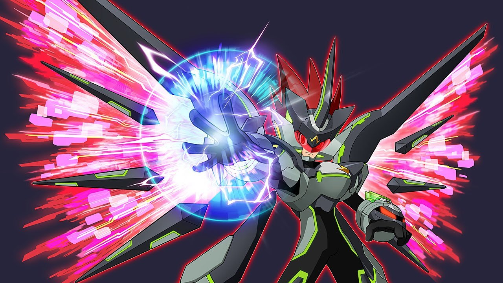

Saying this ahead of time this is a major compilation of information from the Rockman EXE Zone Wiki. The goal is to show the bare minimum amount of content needed to 100% MMSFLC Contact me via email: ace.joker985@gmail.com for any issues (I know its not a creative email)
This is a guide on how to complete achievements or awards for the Megaman Starforce Legacy collection. Please note that the first 6 will not be covered as they require you to complete the first and last act of the game, which will respectively grant the Mega Man star in Starforce 1 and 2, and the Black Ace or Red Joker star for star force 3 respectively. These achievements also do not indicate a full completion of each game as they do not require you to fight each game's super boss or finish every help request etc.
Slash Claw is on the Sci Museum EM Wave Road (BMW) at Amaken
Porcu Needles is the Cipher Wave Change Geo Stelar, On The Air!!
Demon's Eye is a Cipher Mail which is the anagram for Cancer Bubble
Bubble Fist is the Cipher Time to go On Air!
Magic Breath is the Cipher KMALEETZCP the anagram for Zack Temple
Zenny Finder is in the ticket Machine at Nacys Roof
Card Finder is in the Spacesuit Comp (BMW) in the Space station
Starhoop is in the Suite EM Wave World as a (BMW)
Quick Ring is the Cipher Wave Battling, it's like a form of greeting!
Image Eye is the Cipher AXIMSOEG
Sang Claw is the Cipher Pull off a high-powered Best-Combo!
Zenny Finder is in the Fossilized sandwich at the Whazzap Lines
Card Finder is special as it requires a certain amount of link power before acquiring. Please equip LM Master Shin and OG Megaman before talking to the Wave World NPC at the Whazzap Lines and they will give it to you.
The final one included is the Battle Network Blaster which requires completing its own quest and is a stand alone achievement. You will have to go to a comp in random parts of the game and battle viruses after examining a box.
The first being in the Mailbox Comp at Echo Ridge
The second being at the Old Binoculars comp at IFL Tower
The third at the Lost Ice Stat Comp in Foodtopia
The fourth being at the Sunken Ship Comp at Loch Mess
The last being in the Ammonite Comp in Whazzap Lines
Once they are collected and read in the key items section and you pulse out you will receive mail from Lan Hikari which grants the Battle Network Blaster and its Achievement.
Star Hoop is found in the Prop Cabinet Cyber Core in WBG Studios
Virus Claw is the Cipher Eta28274
Gale Claw is the Cipher Chi78584
Danger Ring is the Cipher Psi09659
Battle Network Blaster EX is the Cipher Omega68805
Zenny Finder is sold for 6000 Zennys by a hertz on National Astro Wave 1
Card Finder is in Mini Antenna Cyber Core as a (BMW) (which requires dealer key to open)
The item can be found by talking to a hertz and responding No to him inside a comp in the Space Station, you need this to open a purple door in Deep Space 1 or 2.
Can be done by selecting all 6 cards on the custom screen which can be done during any time in the game but is especially easier after gaining side select when using the Starforce or Tribe On!.
The first 3 can be obtained by going to Luna's, Zack's, and Bud's Computers and downloading their data.
The next two are at Wilshire Hills the first being in the Mega Display Comp bought from a merchant hertz for 3000 Zennys and the second being sold by the attendant next to master shin for 3000 Zennys.
The other 2 are help quests for Sonia (input for her song) and Amy's help quest where you giver her 3 separate battle cards that can be found in Grizzly Peak and in the Sky Wave.
The last wallpaper is from the downed hertz in Alternate Wilshire Hills
Please note that the DX wallpaper is not required for this achievement. There is also a bug where if Apollo Flame DX is defeated last it will not grant the wallpaper, it can still be rewarded by defeating another DX boss after.
Requires rolling a (Snowball 1, 2, 3, or X) into 2 obstacles which can be done during Plesio Waves fight in Starforce 2 where he spawns 2 stones that will eventually line up for the card. You can also break 30 obstacles using break (or the aforementioned Snowball) battle cards for the other achievement. Can be done in Starforce 2 or 3.
Requires you to use the Noise Mod Gear in the Mega Man section of Starforce 3 to set up a 4 of a kind, 5 of a kind, Full House, Straight, Flush, Straight Flush, or Royal Straight Flush. (Pair and 3 of a kind don’t give a bonus)
Requires accessing the Meteor Server at 500% noise or higher. Can be done by using a folder of non-dimming, non-elemental battle cards. One strategy is equipping Rogue Noise, Sword Fighter 3 and X, with Noise Mod Gear Sword+10 and Sword+20 and fighting a V3 Boss. If you accidentally counter the boss 5 times you might even get the Quick Reflexes achievement.
Can be done after defeating Diamond Ice. The best way of initiating an Omega boss fight is traveling to an area that doesn't include the last 2 areas you have been to. My route loop is Noise Wave 4->Noise Wave 6->PlanetFMAstroWave 1->PlanetFMAstroWave 2->PlanetFMAstroWave 3->Black Hole Server->then backwards and repeat. This is done because the Omega Bosses that can be encountered in PlanetFMAstroWave 1 & 2 are a 1/32 chance instead of a 1/64 chance for normal Omega Bosses.
Can be done in Starforce 2 and 3. In Starforce 3 you can use a clocker and max-encounter rate to either guarantee a V3 boss, a battle with a Hertz in danger, or a G virus battle. The ideal in this scenario is the 2nd encounter type and to not hit the Hertz during battle. Use most Cyber Core to get rid of the chance for a V3 battle. Repeat until you save 30 Hertz.
This can only be done is Starforce 3. Using the same method as before (try Echo Ridge Wave Road) fight a V3 boss and finish with 300% noise and under 30 seconds. Repeat until you get 30 Noise Frags (technically 45 as they are needed fore other achievements) and 30 Illegal Battle Cards.
Strategy involves buying 90 Attack+10's from the discount bin at Ken Suther's BIG WAVE, and going to the SP Traders at Waza and feeding the acquired Battle Cards until you unlock Star Chance Mode. Repeat until successful.
Can be done in Starforce 2 & 3. The easiest way is using the Illegal Battle Card All Poison which turns all panels on the field into poison, which can be comboed with Poision Storm to get the unlock.
Form any sort of galaxy advance in Starforce 3, Impact cannon only requires cards from the Geo, Waza, and Kelvin Folder. When in battle if you press cannon, plus cannon, and heavy cannon in that exact order to create the Impact Cannon galaxy advance.
Can be done in Starforce 2/3 when using the double stone battle card with the D-Pad. This can also be done in Starforce 3 by equipping the Acid Striker white cards with Acid Ace V3, and pressing the Battle Card button right before the first slash while in battle. There is also WingBlade Giga, Acornbomb, Shark Cutter, (Jack Corvus and Queen Virgo), etc. the ones mentioned earlier just happen to be accessible almost immediately on a save file.
Has an incredibly misleading description, where Mega man must defeat an enemy that is on the same row as him. A decent way of doing this is moving to the side and using the tornado dance battle card (or an equivalent card) while you are getting attacked by Crowcar (Jetattack virus) or any of their variants. As long as the enemy is deleted on your row it should work out correctly.
Ken Suther will also request a Wide Wave 3 card, which can be found in Space Comp 1 while battling the Wibbledum virus with Card Finder (HP+)
At the Sci Museum at Amaken Polly Reade will ask you questions about space, the answers being a black hole, 3, and Leo.
Talk to Pat at Boreals Lab in Amaken and go back to Dream Island Dump and talk to the man in front of the truck, then head over to the roof of Nacy's to find the Sorter Bot there and return to Pat after talking to it. (HP+)
Talk to Mr. Shepar at the Studio on the 2nd floor of Echo Ridge Elementary, then head to Nacys roof and talk to the man next to the Moai statue and he will sell the figurine for 500 zennys, then return to Mr Shepar and receive the reward. (HP+)
Talk to Luna's father at Nacys roof and give him 5 Moai1 cards which can be found using Card Finder in the Time Square EM Wave Road, go back to him and get your reward. (HP+)
Talk to agent Copper outside of Nacy's and find and defeat the wave jammers in the Cake Shop, Mowai, and Enormatron Comp and return to Copper for a reward. (HP+)
At Dream Park talk to Mead Greene and after finishing the first set of dialogue talk to him again with shovelman and complete the quest to receive the reward (HP+)
Head to the junk shop at Dream Island and talk to the old lady Selah Agane; she will have you enter the recycled item comp and talk to the npc inside and hand them a recover 80 to fix the issue afterwards go back to the lady and receive the quest reward. (HP+)
Talk to John Forman at the City Dump in Dream Island and check the sorter bot while using the ThermoMan Navi Card, afterwards get the (HP+)
Talk to Boreal at the Island Underground and head back to his lab and check the lockers for the album item, afterwards head back to Boreal and get the (HP+)
Kate Chizer at Hills. Blvd will ask you to take her quiz, and you must answer the Star Carrier, Sonia Strumn, and the Shopping Plaza (HP+)
Iver Gatte at Wilshire Hills will ask you to answer questions, and the correct responses are Matter Waves, A singer, and the Satella Police (HP+)
Ere Mitic can be found in the Shopping Plaza on the 3rd floor, and you must battle virus's after inspecting the Sky Board on the 2nd floor and claim indie fragment 1 from him after.
Leroy Mann at Grizzly Peak will require you to select the option I need time to think and have the eat machine matter wave to talk to him. (HP+)
Yugo Astray at the Peak Hotel will make you get a map from the lobby counter and return to him with it (HP+)
Styg Dismal can be found at Hills. Blvd, respond to him saying that not sure I do and have the Ski Matter wave talk to him (HP+)
Carma Iffy can be found at Wilshire Hills and you will need 300 Link power (use LM Shin and OG Megaman for extra link power), and require you to take the to the right of the Sonia Strumn display and talk to Mother Hills return back to Carma for the reward. (HP+)
Nival Peaks at Grizzly Peak needs to fix their star carrier which requires you to head to the sled in the middle of the slope (the one with the wavehole) and battle the viruses there for a (HP+)
Jax Dublex is the man nearby the river at echo Ridge who is inputting the code his brother gave him upside down at the apartment complex in which the correct code is 196.
Hide Seek is an npc near the Kiosk area at Echo Ridge who will make you search Echo Ridge for him, in the end you will find him hiding inside the pool (HP+)
Hamer Nayl is an old man who will be next to the Echo Ridge Elementary gate, and will require you to get rid of graffiti in areas he has built, the first site is at the roof of echo ridge elementary behind the roof, the second will be at Spica mall at the wall next to the dentist office, and the final one will be at Alohaha which will require you to take the ramp behind the castle and inspect the wall at the end to get rid of the final piece of Graffiti. (HP+)
Angel Wise is a girl in the Science Club Room who will have you give woody a drink, that will require you to travel to Alohaha and talk to the old man and partake in a search hunt to find coconuts near the stall, snake juice from the npc at the end of the pier, and flowers from the outside of the castle. After collecting those, the old man makes the drink and you find Woody at Waza HQ and give him the drink, after that return to the girl for the reward. (HP+)
Raida Briz is a kid on the roof of echo ridge elementary who will ask you to find his test paper which is on the Wave road above the Big Wave (HP+)
Sanc Quatr at WBG studios near the event stage will have you pick up lunch at Echo Ridge Elementary and return to WBG studios to give lunch to the guy in the editing room, the girl in the prop room, and the guy near the tree and go back to Sanc for the reward (HP+)
Rob Sidkic at Waza HQ will have you defeat three separate overworld viruses grouped up together at the ramp at Spica Mall, report back after to receive a reward (HP+)
Vidy Otaku at Waza HQ will have you go into the Dragon statue Cyber Core at the beach and defeat the Mal Wizard inside and report back after (HP+)
Rob Sidkic has another mission where you need to head to Echo Ridge and enter the ERWicket Cyber Core and battle the Malwizard inside, after reporting back you will actually receive a giga card (either OxTackle or BreakTimeBomb).
Sugar Suet will make you go to Spica Mall and enter the candy shop to acquire Ice Cream for 50 zennys, which will have you go back to Echo Ridge, enter the Astro Wave and head back to the command center through Waza before the ice cream melts.
After completing these quests you should have 30 help requests done, please note that a lot of them include hp memories, which shortens the next section to where we only need to find 27 hp memories as actual (BMW)'s or real world examinations.
Examine the thermostat is Zack's room for (HP+)
In Geo's Room EM Wave Road find a (BMW)(HP+)
In Big Wave EM Wave Road find a (BMW)(HP+)
In the Video Game Comp of Buds room (BMW)(HP+)
Examine the teachers desk of Class 1A in Echo Ridge Elementary (HP+)
Examine the Cameras in the Studio (HP+)
Examine the Blue Statue next to the Dog statue in Times Square near the wave hole (HP+)
Examine the garbage trucks at Dream island (HP+)
Examine the wooden table at Dream Park near the wave hole (HP+)
Geo's Room EM Wave World (BMW)(HP+)
Mailbox Comp (BMW)(HP+) (Some of you might have been here for the BN Blaster EX achievement)
Junk Box Comp in Bud's Room (BMW)(HP+)
Step Comp in Zacks Room (BMW)(HP+)
Big Wave EM Wave World (BMW)(HP+)
Talk to the man in the first floor Shopping Plaza at Wilshire Hills (Requires 50 Link Power) (HP+)
Examine the drying Ski's on the top floor in the Peak Hotel (HP+)
Examine Matter Wave beds in the Suite of Grizzly Peak Hotel (HP+)
Talk to the souvenir shop employee of Grizzly Peak Hotel (HP+)
Examine Cable Box (Science Club Room) (HP+)
Examine the Spimo the Cat poster next to the Wave Station at Spica Mall (HP+)
Examine Outfits Display inside Alohaha Castle (HP+)
Examine the Dragon Statue at the Beach (HP+)
Examine the Blue Stairs at Waza HQ (HP+)
Examine the Globe at the Command Center of Waza HQ (HP+)
Examine the Computers next to the Main Computer in the Command Center at Waza HQ (HP+)
Examine the green machines in the Secret Shelter at Dealer Hideout (HP+)
Examine the first machine you see in the Crimson Factory at Dealer Hideout (HP+)
Requires you to have to register 3 best combos. This will more than likely happen when farming Mega Battle Cards the important part is to make sure you get in attacks consistently during a boss fight and to not get hit. It can be recommended to fight Taurus Fire in Foodtopia while setting the encounter rate to maximum, due to him being somewhat slow compared to the other boss's (assuming you don't delete him fast enough before he does his wild slam attacks). You can also do the achievement (Legend Card Creator) by going to Legendary Master Shin in the 3rd floor of the shopping Plaza and spending 3000 Zennys to turn one of the best combos into a legend card.
Can be done before entering Black Hole Server 1; it involves fighting Acid Ace BB and Dread Joker RR the first being in the right side and the latter being in the left side of Planet FM Astrowave 3. This requires you to have at least 100 standard cards, as there is a barrier for it in Noise Wave 5 that will stop you from moving forward.